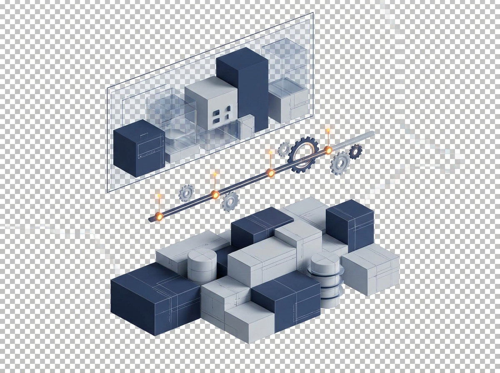
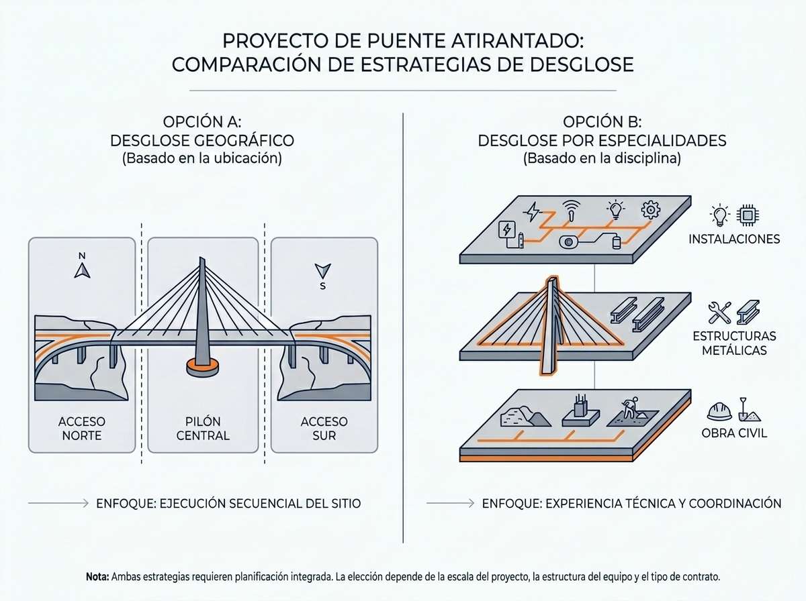
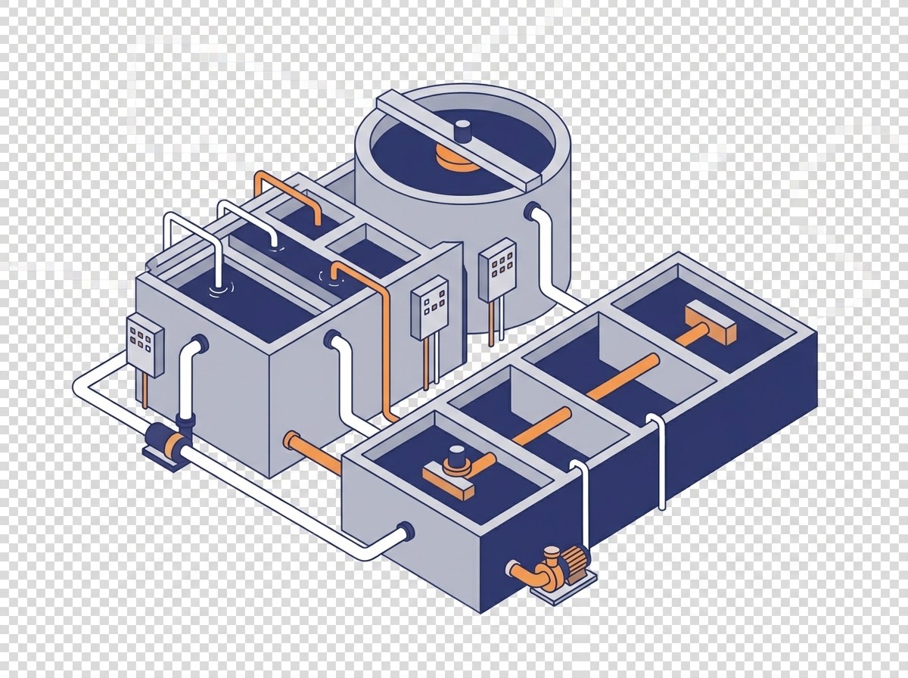
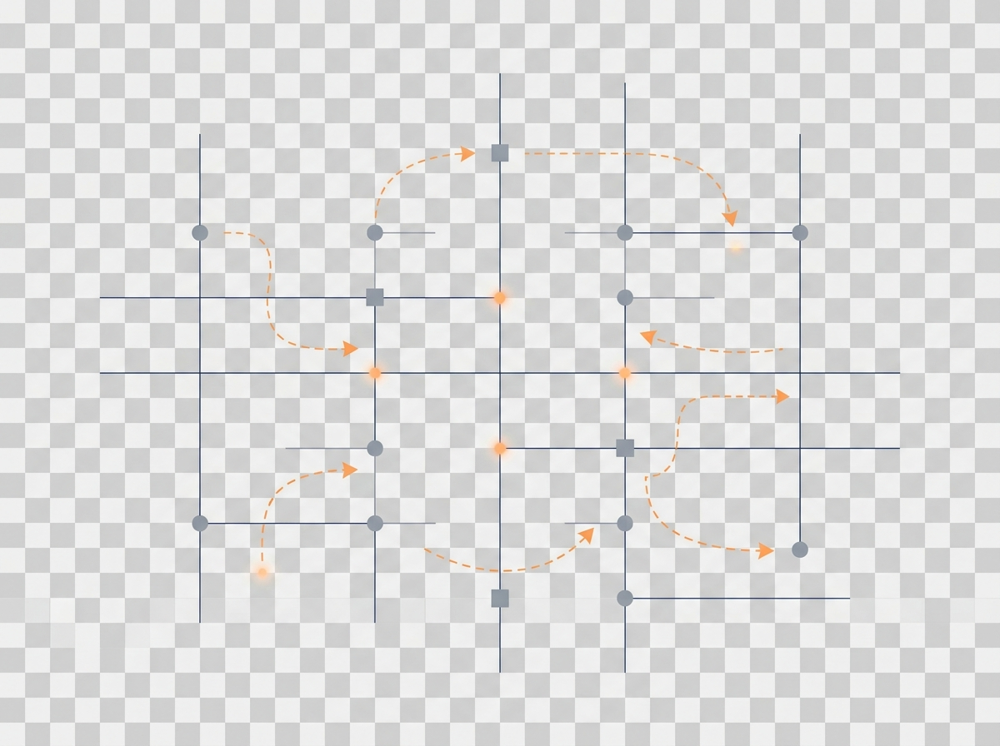

Actividad Presencial
Clase 2, Semana 5
La EDT representa todo el alcance del proyecto. No se incluye trabajo fuera de ella, y no se omite nada definido en el contrato.
El proyecto tiende naturalmente al caos (entropía). La EDT es el mecanismo de orden que estructura el sistema.
Descomposición estructural y lógica desde el nivel de "Proyecto" hasta llegar a los "Paquetes de Trabajo".
Diferenciación crítica en la planificación del alcance.
Nota: La EDT no es un listado de acciones, es un listado de entregables.
Micro-Desafío (15 min)
Imagina la construcción de un puente atirantado de 400m sobre un río caudaloso. Tienes dos formas de "pensar" el desglose antes de dibujar la EDT:
A. Geográfica: Dividir en "Acceso Norte", "Pila Central" y "Acceso Sur".
B. Especialidades: Dividir en "Obras Civiles", "Estructuras Metálicas" e "Instalaciones".

¿Cuál facilita el Fast-Tracking? La Estrategia A. Al separar por frentes geográficos, las actividades de cada zona pueden avanzar de forma independiente (paralelismo). En la Estrategia B, las instalaciones suelen depender críticamente de que terminen las obras civiles, limitando el traslape.
¿Cómo cambia la Neguentropía? Un contratista externo es una fuente de entropía (ruido/incertidumbre). Si usamos la Estrategia B, el contratista tiene "dueño" de una rama completa de la EDT, simplificando su alcance pero complicando las interfaces físicas. En la A, el contratista aparece en múltiples ramas, lo que exige una coordinación de información mucho más robusta para evitar el caos.
¿Qué esquina del Triángulo protegemos? La Estrategia A protege el Tiempo (aceleración). La Estrategia B suele proteger el Costo y Desempeño, ya que permite economías de escala y una supervisión técnica más especializada por disciplina.
Aplicar una EDT a un proyecto de infraestructura complejo, garantizando la trazabilidad del alcance y la definición de paquetes de trabajo controlables según los estándares de Serpell y Kerzner.
Oficinas Técnicas (4-5 integrantes).
Definir la estrategia de división técnica.
Construcción de la EDT (Mínimo 4 niveles).
Definición de Diccionario para 2 Paquetes de Trabajo Críticos.
Instrucción: Los estudiantes deben entregar al final de la sesión su propuesta de EDT y la definición estratégica adoptada.
Planta de Tratamiento de Aguas Servidas.
Contexto: Proyecto de infraestructura civil e industrial con alta interdependencia.

El mandante exige que el sistema de bombeo sea entregado antes que el resto de la planta para pruebas de red externa.
Justificar si la EDT será orientada a procesos o a productos físicos (vinculado a la activación previa).
Elaborar el desglose jerárquico (Nivel 1 al 4).
Asegurar que la suma de los hijos es igual al padre en todo el desglose.
Identificar y codificar 2 WPs que sean críticos para la entrega anticipada del sistema de bombeo.
| Criterio | Excelente (25 pts) | Bueno (18 pts) | Regular (12 pts) | Insuficiente (<10 pts) |
|---|---|---|---|---|
| Lógica de Desglose | Jerarquía clara basada en estrategia técnica declarada. | Jerarquía lógica, pero con saltos de nivel menores. | Desglose confuso o mezcla de actividades y entregables. | Sin estructura lógica jerárquica. |
| Cumplimiento Regla 100% | El alcance total está cubierto sin solapamientos. | Cubre el alcance, pero hay elementos redundantes. | Faltan componentes menores del alcance solicitado. | Omisiones graves de componentes principales. |
| Definición de WP | WPs son medibles, asignables y claramente controlables. | WPs definidos, pero algunos son demasiado extensos. | WPs se confunden con actividades simples. | No se identifican paquetes de trabajo. |
| Integración Técnica | La EDT facilita la gestión de la restricción del caso. | La EDT considera la restricción de forma parcial. | La EDT ignora la estrategia de entrega anticipada. | No hay alineación con el caso planteado. |
"Planificar es traer el futuro al presente para que puedas hacer algo al respecto ahora."
